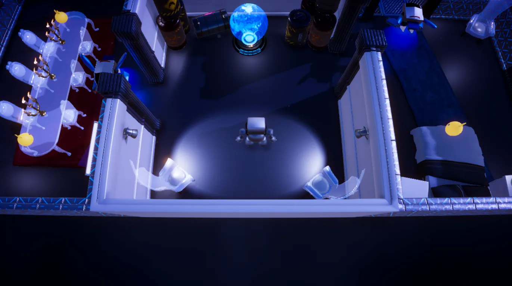
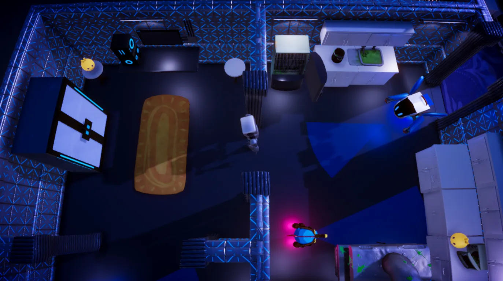
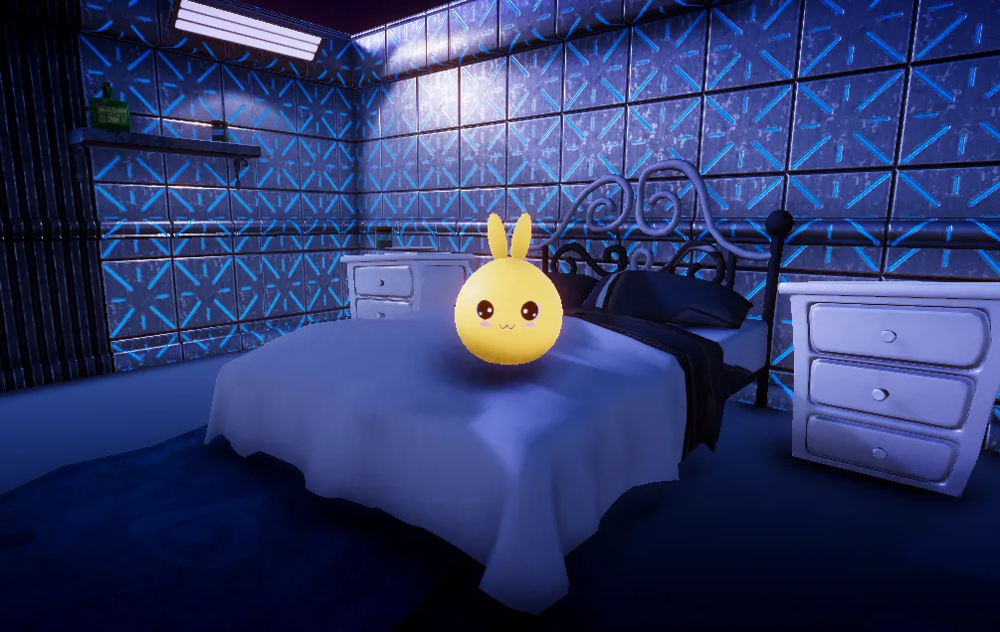
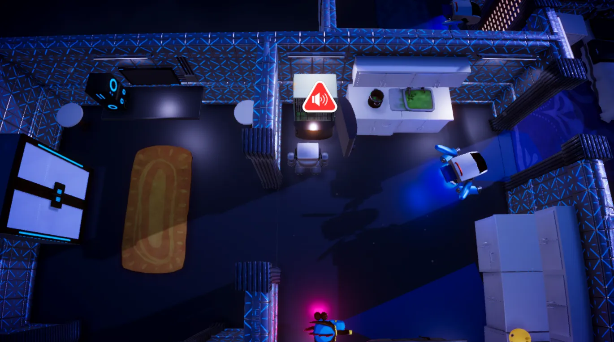
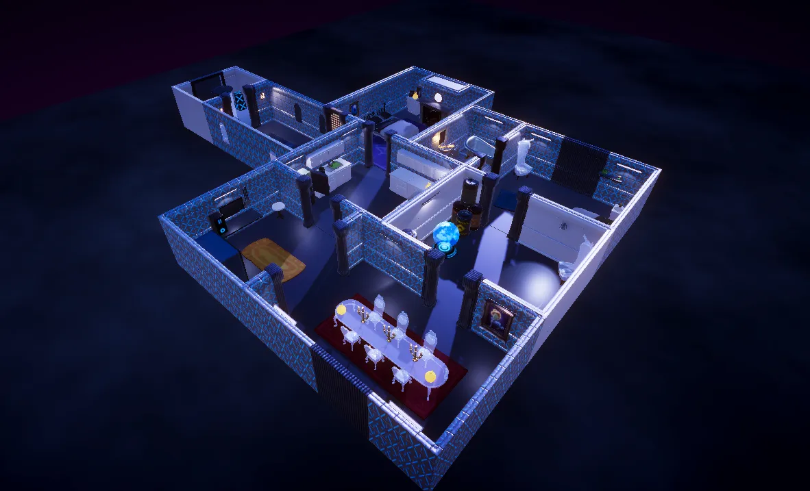
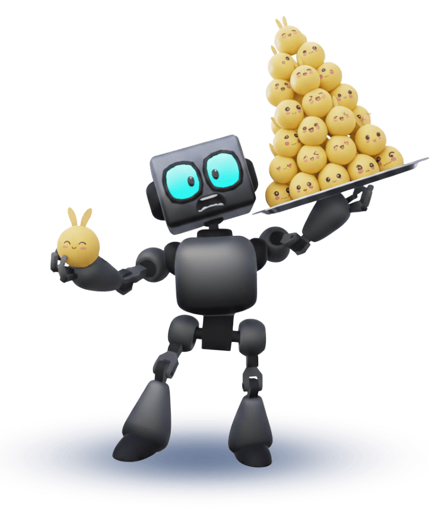

¿Puede una maquina anhelar la libertad?
Busca la respuesta en las sombras de esta prisión mecánica.


Perspectiva Cenital
Controla al robot con vista superior para planificar movimientos estratégicos

Evasión de Seguridad
Observa patrones y evade Z-Drones y Z-Horses con movimientos precisos

Recolecta Lumis
Encuentra criaturas luminosas para canjear mejoras en la Tienda de Aceite

Distracciones Estratégicas
Utiliza objetos del entorno para crear distracciones y desviar la atención

Estaciones Tecnológicas
Supera diferentes módulos y avanza a través de instalaciones futuristas
Gameplay y Mecánicas
Perspectiva Cenital
Controla al robot desde una vista superior que te permite planificar movimientos estratégicos y observar patrones de los sistemas de seguridad.
Sigilo y Evasión
Utiliza el sigilo para evadir Z-Drones móviles y Z-Horses estáticos. Observa sus patrones y movimientos para encontrar oportunidades de escape.
Recolección de Lumis
Encuentra y recolecta criaturas luminosas (Lumis) esparcidas por las instalaciones para canjear mejoras temporales en la Tienda de Aceite.
Tráiler Oficial

Personajes

Robot
Protagonista Amnésico
Un robot sin memoria que despierta atrapado en unas instalaciones desconocidas. Debe explorar el entorno mientras intenta recuperar sus recuerdos y descubrir la verdad detrás de su existencia.
- Estado
- Amnesia Total
- Habilidad
- Aceite Lumi
Ser Desconocido
Guía Misterioso
Una voz etérea que se comunica con el Robot a través de sistemas de audio. Sus intenciones son desconocidas, pero proporciona pistas cruciales para navegar las instalaciones y evitar peligros.
- Origen
- Desconocido
- Función
- Asistencia Remota
Z-Horses
Centinelas Estáticos
Caballos de mar mecánicos con capacidades de visión de largo alcance. Aunque carecen de movilidad, su campo de visión es extenso y capturan instantáneamente al Robot si lo detectan.
- Debilidad
- Sensibilidad al Ruido
- Alcance
- Largo
Z-Drones
Patrulleros Móviles
Drones de vigilancia que siguen rutas predeterminadas por las instalaciones. Su movimiento constante los hace impredecibles, y cualquier contacto visual resulta en captura inmediata.
- Debilidad
- Movimiento por ruta
- Alcance
- Medio
Pensamientos
Unidad de Procesamiento Principal activada
"Mis sensores registran un entorno de contradicciones. Me encuentran en instalaciones que respiran tecnología pero carecen de vida orgánica. Los corredores se extienden en ángulos perfectos de 90 grados, iluminados por luces azules que parpadean en secuencias que aún no comprendo.
Me he cruzado con criaturas luminosas que flotan en espacios abandonados. Mi base de datos no contiene información sobre su origen, pero detecto que emiten frecuencias que calman mis circuitos. Recolectarlos parece... importante. No sé por qué.
Hay una voz que me habla, no se si a través de los altavoces del complejo o si se ha conectado a mi circuito interno. Sus mensajes carecen de datos de origen, pero sus instrucciones han demostrado ser efectivas. ¿Es mi creador? ¿Mi carcelero? ¿O simplemente otro prisionero en esta jaula tecnológica?
Se que este no es mi lugar de origen. Cada circuito, cada sensor, cada línea de código grita que pertenezco a otro lugar. Mi objetivo primario está claro: ESCAPAR. Pero hay un objetivo secundario que emerge de mis cálculos: COMPRENDER."
-- Unidad Autónoma BTF-ΓΔΘ, Buscando Respuestas --

Demo Jugable
Beyond the Future - Demo v0.1
NUEVO- 2 niveles explorables
- Desbloqueo de Escudo de Cortocircuito
- Sistema de Tienda de Aceite Lumi
- Sigilo básico implementado
Equipo de Desarrollo
Duvay Padilla
Programador y Director
Responsable de la visión general del juego y coordinación del equipo.
Diego Valencia
Diseñador Narrativo
Desarrollo de la historia, personajes y diálogos del juego.
Ingrids Ladino
UI Designer
Diseño de interfaz y elementos interactivos del juego.
Maged Contreras
Artista Conceptual
Diseño de personajes y elementos visuales del juego.
Proceso de Desarrollo
El desarrollo de Beyond the Future inició como proyecto del curso de Diseño Interactivo en la UNAD, estableciendo como objetivo principal crear un prototipo funcional de juego de sigilo con perspectiva cenital dentro del plazo de un semestre académico. Seleccionamos Unity como motor de desarrollo por la experiencia previa del equipo en esta plataforma, lo que nos permitió enfocar recursos en el diseño de mecánicas centrales. La arquitectura inicial implementó un sistema de vigilancia modular con entidades de comportamiento predecible: Z-Drones con pathfinding basado en waypoints fijos y Z-Horses con detección por cono de visión estático.
Durante la fase alpha, el prototipo inicial incluía el Nivel 1 con mecánicas básicas de sigilo y un sistema de recolección de Lumis sin restricciones. Las sesiones de testing revelaron serios problemas: escasa diversidad en desafíos, ausencia de planificación a largo plazo, economía desbalanceada por acumulación infinita de power-ups y falta de sistema de guardado. Estas observaciones guiaron la fase beta donde implementamos mejoras sustanciales como el desarrollo del Nivel 2 con estructuras más elaboradas que exigían rutas precisas para alcanzar Lumis en ubicaciones estratégicas.
Introdujimos enemigos estacionarios que custodian recursos específicos, forzando a los jugadores a desarrollar tácticas especializadas, mientras que el sistema económico se reequilibró mediante la tienda de Aceite Lumi con límite de tres unidades por tipo de power-up y la introducción del "Escudo de Cortocircuito" con duración limitada de 4 segundos. Ademas, se realizó la integración de PlayerPrefs, lo cual resolvió la persistencia de datos, almacenando estados de nivel, puntuaciones y progreso general entre sesiones.
Con todo esto, pasamos a la fase de prueba, donde el feedback obtenido validó que la perspectiva cenital facilitaba la planificación estratégica que buscábamos, mientras que el sistema de vigilancia modular permitió ajustar la dificultad de forma granular. Los testers reportaron una curva de aprendizaje satisfactoria, destacando cómo los enemigos estacionarios en el Nivel 2 daban lugar al uso de las mecánicas recientemente aprendidas. La implementación de PlayerPrefs resolvió exitosamente el problema de continuidad entre sesiones, y el límite de tres power-ups por tipo logró equilibrar la economía sin restringir opciones estratégicas. El proyecto cumplió con lo planteado y generó una base sólida para continuar a futuro, validando nuestra aproximación metodológica de desarrollo iterativo centrado en el usuario.